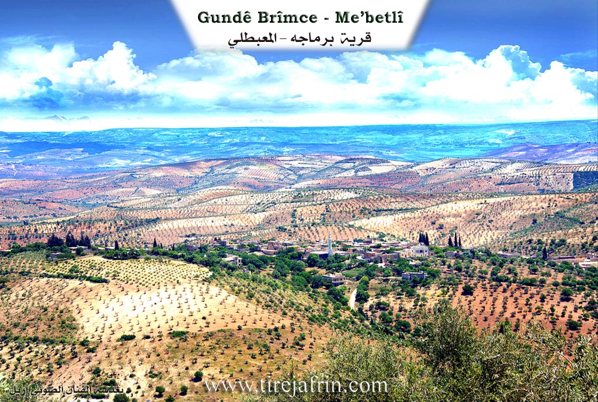
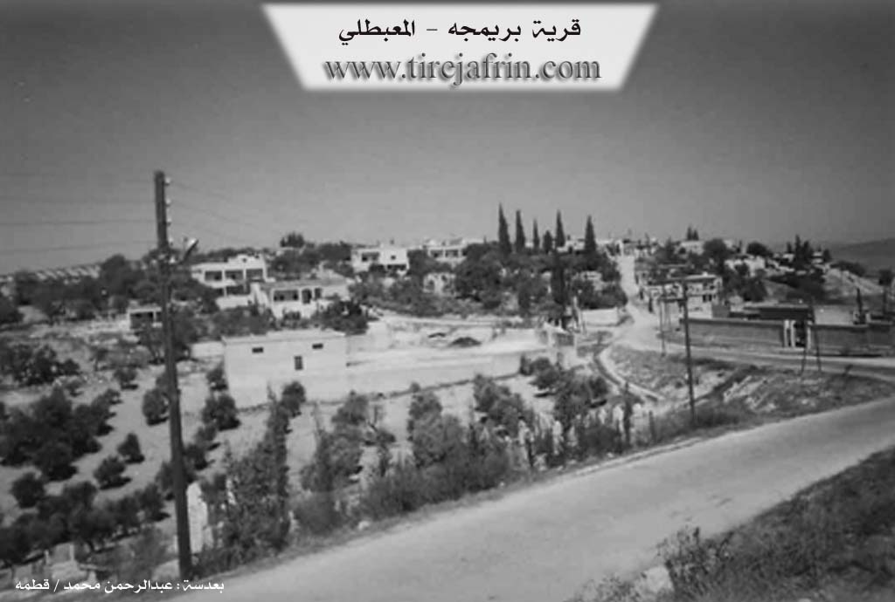

General Information
Nahiya (Subdistrict)
Mabeta
Also Known As
Birimce, Birîmce, Bremcê, Brimaja, Brimajah, Brîmce, برماجه, برمجة, بريمجه
Tribes
Qidran, Xidriya
Families, Clans, etc.
Berimce, Birîmce, Emo, Eyşe, Fîlik, Hemcan, Kosa, Koşkar, Mala Ehmo, Mala Mixtêr, Mala Usê, Mala Şêxî Fîlik, Malê Arifî, Malê Kekû, Malê Meyrê, Malê Mihemed, Malê Reşîkerê, Malê Tarî, Malê Torî, Malê Şewket, Memlar, Momlera, Sokel Kase

Photos


Basic Information about Birîmce
Source: Ax û Welat
Etymology: Originally named Bêker after a brave man named Bêker, son of Mela Mihemed. The name Birimce derives from a descendant named Îbrahîm. Theories include Turks calling him 'Birinci' (First) which evolved to Birimce, or because he distributed barley ('ce') during a famine, leading to the phrase 'Birim Ce'.
Foundation Date/Period: 700 to 800 years ago
Caves: Xitirka, Xidirko
Number of Caves: 15
Ruins: Xitirka, Xidirko
Wells: Bîra Gûzê, Bîra Malê Mihemed, Bîra Malê Torî, Bîra Malê Arifî, Bîra Malê Meyrê, Bîra Şewket, Bîra Gêlem, Bîra Berbeûş, Bîra Jorîn
Other Landmarks: Oda Mîvana
Source: Khalil Sino
Etymology: Derived from a man named Birîm who sold barley (ceh), leading to the name Birîmê Ceh which evolved into Birîmce
Foundation Date/Period: Approximately 400 years ago
Ruins: Xidirk, Xidirya
Trees: Çinar
Wells: Bîra Gûş
Other Landmarks: Gundê Hisê, Mabeta, Abîdan
Summaries
I. Summary from TirejAfrin Site (English) of Birîmce
Source: https://www.tirejafrin.com/site/kura%20afrin%20%20%20mebetli%20-%20brimce.htm
It is stated in the book جبل الكرد (عفرين) دراسة جغرافية Çiyayê Kurmênc (Efrîn): A Geographical Study by د. محمد عبدو علي Dr. Mihemed Ebdo Elî regarding Berimce:
Berimce /1990 inhabitants, 940 hectares, 5km from center, 660m altitude/:
Berîmce: The name is derived from the name Ibrahim, and the Kurds pronounce it in the form "Berîm" and "Brim". This refers to Ibrahîm Bekir, who was the representative of the Çiyayê Kurmênc district in the municipality of Kilis in the middle of the nineteenth century. He was literate and one of the enlightened people of that time, so the village became known by him. As for the priest Barsoum, he says that its origin is Syriac from "love of mung bean" (hub al-mash), but this is naturally incorrect. It is a large village located on the southeastern slope of a limestone plateau.
It is stated in the book عفرين .... نهرها وروابيها الخضراء Efrîn... Her River and Her Green Hills by the writer عبدالرحمن محمد Ebdulrehman Mihemed from the village of Qetme:
Berimce: A village in Çiyayê Kurmênc, administratively following the township of Mabeta, in the Efrîn region, Heleb governorate. It is a large village located in the middle section of Çiyayê Kurmênc on the southeastern slope of a marly limestone plateau, furrowed by streams descending in all directions. It lies to the southwest of the town of Mabeta and is 5km away from it. Its soil is clay, covered by forests and pastures.
It is bordered to the north by a harsh slope, two streams, the village of Xaziyanlî Jorîn, and Mezra Silo. To the south, it is bordered by a slope, two streams, a high mountain range planted with olive trees, and the village of Mîrkanlî. To the west, it is bordered by a slope, a deep valley, a high mountain range planted with forest trees and olives, and the village of Cumazanlî. To the east, it is bordered by a harsh slope and several streams planted with olive, walnut, and grape trees, and the village of Darkîr Mezin.
The number of its houses is about 100, and its age is about 400 years. Its houses are of stone and mud with flat wooden roofs, while modern ones are cement and have begun to dominate the overall construction. The village spreads over the slopes of the high mountain plateau to the south and east. An electricity network is available, as well as a water network from a well near Mezra Silo on the main road. The village contains a primary and preparatory school, a telephone, an old mosque in the center of the village, two olive presses, and an agricultural cooperative society.
The residents farm 940 hectares of rain fed land with olives, vines, and other fruit trees, and irrigated land from artesian wells (pomegranates, walnuts, and summer vegetables), alongside raising sheep and goats. A section of them works in a center for dairy derivatives and jams (apricot). An asphalt road connects it to the district center and passes through several villages.
Among the families present in the village: The Berimce family, who constitute 70 percent of the village population; the Memlar family (comprising Kako, Kare, and Tarî); the Eyşe family; the Koşkar family (who came from the village of Koliyan); the Kosa family (who came from the village of Emranlî); the Emo family (who came from the village of Qermitlîq); and the Sokel Kase family. Naturally, there are many holders of university degrees and institute diplomas in the village.
Village Mukhtar: Luqman Fîlk.
Preparation and execution:
Manager of the Tirej Efrîn site: Ebdulrehman Hacî Osman
20/12/2013
Sources:
- Book: جبل الكرد (عفرين) دراسة جغرافية Çiyayê Kurmênc (Efrîn): A Geographical Study by د. محمد عبدو علي Dr. Mihemed Ebdo Elî.
- Book: عفرين .... نهرها وروابيها الخضراء Efrîn... Her River and Her Green Hills by عبدالرحمن محمد Ebdulrehman Mihemed from the village of Qetme.
II. Summary of Birîmce from Ax û Welat
Source: https://www.youtube.com/watch?v=618VFo8mnUM
The village of Birimce, historically known as Bêker, is located in the Xastiya mountain chain within the region of Çiyayê Kurmênc, approximately five kilometers from the district of Mabeta. Local oral history suggests the settlement was established between 700 and 800 years ago. The village was founded by Mela Mihemed and the Qidran tribe. Its original name, Bêker, was chosen to honor the founder's son, a man renowned for his bravery. The modern name Birimce is attributed to a later descendant named Îbrahîm. According to local narratives, this change occurred either because Turkish officials referred to him as "Birinci," meaning "First," or because he generously distributed "ce" (barley) during a period of famine, leading to the designation "Birim Ce."
A significant portion of the village population traces its lineage to the Xidriya tribe, originally from Wêranşar and Orfa. Before settling in the current location of Birimce, these families inhabited a nearby site known as Xitirka or Xidirko. This area contains the ruins of approximately 15 caves where the ancestors lived for centuries alongside their flocks. Around 280 years ago, families such as Momlera, Malê Tarî, Malê Reşîkerê, and Malê Kekû migrated from the caves of Xitirka to the main village. The village social structure was historically led by figures like Hemcan and his nephew Fîlik. The Fîlik family was noted for promoting education and peace among neighbors, advising against conflict with the Ottomans while maintaining local autonomy. In the 20th century, Şêx Mihemed Fîlik became a prominent nationalist figure, helping found the Şebîbe el Kurdiye in 1935 and later joining the Xoybûn movement.
The landscape of Birimce is defined by ancient water sources and agriculture. The most prominent landmark is Bîra Gûzê, a well estimated to be centuries old, which historically supplied water to multiple surrounding villages. Other notable wells include Bîra Berbeûş near the ruins and Bîra Gêlem. The village maintains a 400 year old guest house, known as the Oda, which served as a cultural center where residents gathered to listen to epics like Derwêşê Evdî and host renowned musicians such as Cemîl Horo and Baqî Xidir. Economically, the village is a hub for agriculture, boasting over 25,000 olive trees and producing almonds, raisins, and traditional grape products like "bastiq" and "sinciq." During the Syrian conflict, displaced residents returned to Birimce, establishing new industries such as a workshop for manufacturing vehicle filters.
II. Summary of Birîmce from Khalil Sino
Source: https://www.youtube.com/watch?v=sNhXeP3zm70
The village of Birîmce, situated approximately five kilometers from the town of Mabeta in the Afrin region, possesses a history deeply rooted in local agriculture and education. According to village elders such as Henîf Xelîl Omer, the settlement has existed for approximately 400 years. The oral history regarding the village origin states that the community was previously located at a site called Xidirk. After Xidirk fell into ruin, the population dispersed, with some moving to Xidirya and others settling at the current location. The name Birîmce is said to originate from an early resident named Birîm who was known for selling barley, or ceh in Kurmanji. Locals referred to him as Birîmê Ceh, a name that eventually contracted and evolved into the current village name.
The social structure of Birîmce is defined by several key families rather than large tribal confederations. The transcript explicitly mentions the lineages of Mala Usê, Mala Ehmo, and the Birîmce family itself. Another prominent household is Mala Şêxî Fîlik, also referred to as Mala Mixtêr or the Mukhtar's house. The village historically comprised around 140 houses, though currently about 70 families reside there due to emigration to Europe and Lebanon. Despite this, the community maintains a reputation for a high level of education (seqafe). A notable figure in this regard was Hemîdê Fîlik, a respected intellectual who was instrumental in establishing a middle school that served Birîmce as well as the neighboring villages of Mabeta and Gundê Hisê.
Agriculture remains the central economic activity, with the village being renowned for its production of sumac, olive leaves (çilû), and grapes. A specific variety of grape known as Lemy is particularly prized in Birîmce. Local farmers note that the cuttings for these vines were originally brought from Abîdan, as they were not native to the immediate area. The village also produces almonds (behîv) and apricots (mişmiş). In the past, the village utilized a traditional textile press (meqbes) for processing clothes, which was originally located in the center of the village before being moved to the outskirts near the road to Gundê Hisê.
Water sources are a critical part of the local geography. While many homes have private wells, a significant communal landmark is Bîra Gûş. This well sits at the bottom of the village beneath a large Çinar tree. It serves as a vital resource for water collection and irrigation, especially given the failure of the government built well. Culturally, the village remembers figures like Cemîlê Wehîd, a beloved storyteller who would keep the villagers awake until morning with his fables and tales during the era before radio and television.
Transcriptions and Subtitles
| Source | Video | Subtitles | Transcript |
|---|---|---|---|
| Ax û Welat 1 | Watch Video | Download SRT | View Transcript |
| Khalil Sino 1 | Watch Video | Download SRT | View Transcript |
Foundation/Origin Information of Birîmce
According to local oral tradition, the village was founded by the Xidiran tribe, a group of shepherds who migrated from the Urfa and Viranşehir region of North Kurdistan. Before establishing the current village, they lived for 200-300 years in a nearby settlement of caves known as Xidirka.
Source: Ax û Walat Transcript
The village is traditionally structured around two main clans, the Birîmce and the Uskorê, who maintain separate cemeteries.
Source: Halil Sino Transcript
Possible Village Name Meaning of Birîmce
A name derived from Ibrahim Bakr who was a representative of J. Al-Kurd District in Kilis municipality in the mid-nineteenth century, and Kurds pronounce it as "Brim". Another theory is that its origin is Syriac from "Love of Mash".
Source: TirejAfrin Site
Originally, the village was named Beker, after an early ancestor, but was officially renamed Birîmce about two decades ago. The name "Birîmce" is said to derive from a knowledgeable and religious ancestor named Îbrahîm; one story suggests the name comes from the Turkish word "birinci" (first) in his honor, while another suggests it means "Ibrahim planted" (Birîm-ceh).
Source: Ax û Walat Transcript
The village is named after an ancestor named Birîm.
Source: Halil Sino Transcript